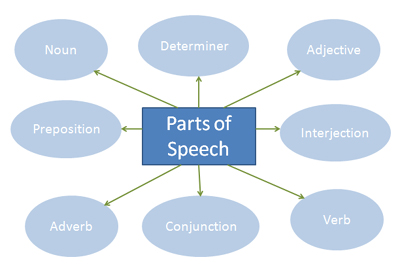

Introduction
Part-of-speech tagging is the process of assigning a part-of-speech (lexical class marker) to each word in a corpus. The basic parts of speech are : Noun, Verb, Determiner, Adjective, Adverb, Preposition (in English), Postposition (in Hindi).


Theory
"Parts of speech" are the basic lexical categories of the words present in a language. It is very important to understand these, in order to understand the grammar and use of the language concerned.
Eg:
- Ram(Noun) ate(Verb) an(Determiner) apple(Noun) with(Preposition) a(Article) fork(Noun).
- राम(Noun) ने(Postposition) चम्मच(Noun) से(Postposition) मिठाई(Noun) खाई(Verb).
Each part of speech explains how the word is used. In fact, the same word can act as different parts of speechs depending on the context.
Eg: A noun in one sentence and an adjective in the next.
- The glass was broken(Verb).
- The broken(Adjective) glass pierced her flesh.
Part-of-speech tagging is the process of assigning a part-of-speech (lexical class marker) to each word in a corpus.
| POS | Function | Example |
|---|---|---|
| Verb | action or state | take, eat, है, सोना, गया |
| Noun | naming word; person or thing | table, John, honesty, राम, कुर्सी, हिम्मत |
| Pronoun | replaces noun | he, she, you, मैं, वह | Determiner | occurs before noun or noun phrase | the, many, all |
| Adjective | describes noun | green, big, छोटा, सुन्दर, काला |
| Adverb | describes verb | naturally, slowly,धीरे, जल्दी |
| Preposition | joins noun to other POS | in,of, about |
| Postposition | joins noun to other POS | में, से, के लिए |
| Conjunction | joins two words, phrases, sentences | but, so, और, या |
| Interjection | express emotion or surprise followed by exclamation marks | Hello!, Hurray!, वाह! |

Objective
The objective of this experiment is to test the knowledge of basic part of speech of words as they appear in a sentence.

Experiment

Quizzes
Assign POS tag to each word in the following sentences
- Heat water in a large vessel.
- The dog is happy.
- The happy dog.
- Park the car near the park.
- The dog is sitting just at the gate.
- बहार जाओ
- गाड़ी उद्द्यान में खड़ी करो
- राम खाना खाकर सो गया
- राम खाते खाते सो गया
- राम ने खाते खाते खाता खुलवाया

Procedure
STEP1: Select a language from the drop down menu.
STEP2: Select a sentence from the drop down menu.
STEP3: Select corresponding POS for each word in the sentence and and click the button.
OUTPUT1: The submitted answer will be checked.
STEP4: If incorrect, click on button for the correct answer or repeat STEP3.
STEP2: Select a sentence from the drop down menu.
STEP3: Select corresponding POS for each word in the sentence and and click the button.
OUTPUT1: The submitted answer will be checked.
STEP4: If incorrect, click on button for the correct answer or repeat STEP3.

Further Readings
- Yamuna Kachru
Chapter 6
- Rodney D. Huddleston
Chapter 6